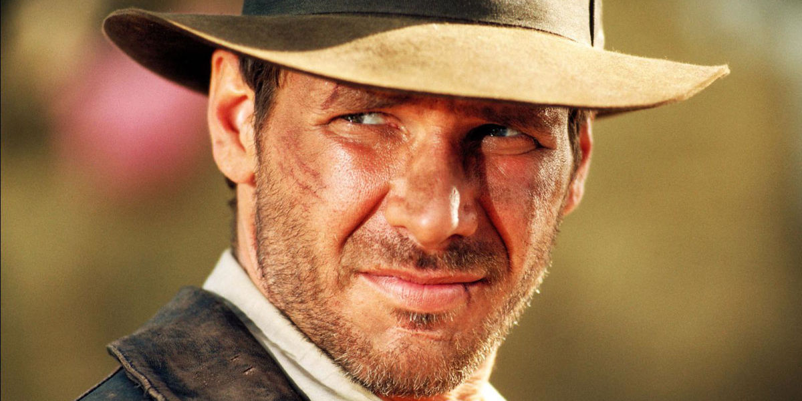

Acteur et charpentier
Acteur né le 13 juillet 1942 à Chicago, Illinois (Etats Unis).
Harrison Ford grandit auprès d'un père catholique irlandais et d'une mère juive russe. A l'Université, il choisit d'étudier l'anglais et la philosophie, tout en s'initiant au théâtre. Mais il finit par être renvoyé en raison de ses absenses répétées. Il veut désormais devenir acteur. Après quelques rôles au théâtre, il part pour Los Angeles. La chance semble lui sourire à 24 ans, lorsque l'un des patrons de la Columbia le remarque et lui fait signer un contrat de sept ans. Mais il ne décroche aucun rôle et est finalement remercié un an plus tard. Universal l'engage aussitôt et lui fait faire de petites apparitions comme dans Zabriskie Point d'Antonioni (1970).
Un comédien charpentier
Lassé de jouer les utilités, Harrison Ford reprend sa liberté et gagne sa vie en devenant charpentier. Il a notamment pour client un directeur de casting qui lui propose de tenir un second rôle dans American graffiti (1973) de George Lucas. Francis Ford Coppola, un autre jeune réalisateur prometteur l'emploie peu de temps après dans Conversation secrète (1974). Malheureusement, aucune sollicitation ne suit ces deux longs métrages et le comédien reste deux ans sans engagement. Désabusé, il hésite en 1976 à accepter la nouvelle offre de George Lucas qui lui propose le rôle de Han Solo dans le space opera La Guerre des étoiles. A la grande surprise d'Harrison Ford, le film est un triomphe et devient culte. Sa carrière est enfin lancée à l'âge de 35 ans.
Une star internationale
Après une apparition dans Apocalypse now de son ami Coppola, le comédien rempile en 1980 et 1983 dans les épisodes V et VI de La Guerre des étoiles qui achèvent d'en faire une star internationale. Dans un tout autre style, il incarne le personnage principal du film de science-fiction Blade runner de Ridley Scott. Autre énorme succès populaire, Les Aventuriers de l'arche perdue (1981) et ses suites Indiana Jones et le temple maudit et Indiana Jones et la dernière croisade de Steven Spielberg lui permet de peaufiner son image de héros sympathique et séduisant. Il achève de conquérir le public féminin avec Witness où il forme un couple très romantique avec Killy McGillis. Harrison Ford connaît néanmoins quelques échecs avec des films qui lui tenaient particulièrement à coeur : Mosquito Coast (1986) de Peter Weir et Frantic de Roman Polanski (1988). Ces revers le poussent alors à tourner dans des longs métrages plus commerciaux.
Un parcours sans surprise
A partir des années 90, Harrison Ford aligne les blockbusters efficaces avec régularité et professionalisme. Qu'il incarne un avocat (A propos d'Henry, 1991), ou le président des États-Unis (Air Force One, 1997), il joue en général des personnages à responsabilité, bons pères de famille (Ennemis rapprochés, 1997), connaissant parfois des crises au sein de leur couple (Présumé innocent, 1990), et souvent victimes de complot (Le Fugitif, 1993). Spécialiste des thrillers (Apparences, 2000) et des films d'action (K-19 : le piège des profondeurs, 2002), le comédien a franchi le cap de la soixantaine avec brio mais sa carrière laisse désormais peu de place à la surprise.
L'acteur vieillissant
En 2007, Steven Spielberg ramène à la vie le mythique personnage d'Indiana Jones, à nouveau incarné par Harrison Ford, âgé de 66 ans, dans Indiana Jones et le Royaume du crâne de cristal. Le film est mal accueilli par les fans de la saga qui lui reproche de ne pas vraiment coller à l'esprit de la trilogie. Par la suite, il enchaîne sur deux films plus sérieux : Droit de passage traitant de l'immigration et Mesures exceptionnelles, l'histoire vraie d'un chercheur au bord de la découverte révolutionnaire. En 2011, il partage l'affiche avec Diane Keaton sur le film Morning Glory dans lequel il joue le rôle d'un présentateur capricieux, puis dans le western de science-fiction Cowboys & Envahisseurs. Ford se fait de plus en plus rare sur les plateaux et ce n'est qu'en 2013 qu'on le retrouve pour le biopic 42 sur la vie du joueur de baseball américain Jackie Robinson, mais également dans Paranoïa qui s'averea être un flop total. Il enchaîne avec La Stratégie Ender qui, au contraire, sera un des grands succès du box-office 2013. Après le renvoi de Bruce Willis du troisième volet d'Expandables, Harrison Ford a été appelé pour le remplacer. Il incarnera donc Max Drummer dans ce nouveau volet réunissant les acteurs les plus costauds d'Hollywood. Il a par ailleurs confirmé sa participation au nouveau volet de La Guerre des étoile, Star Wars Episode VII, prévu pour l'année 2015.